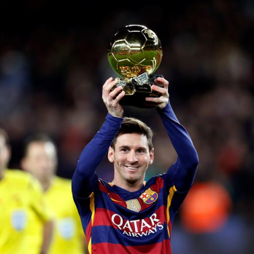
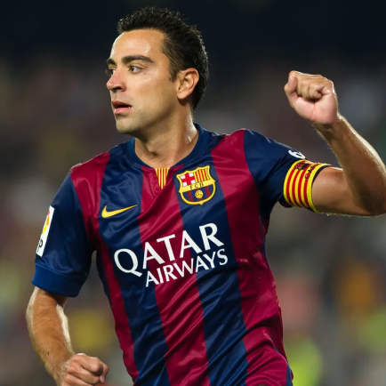
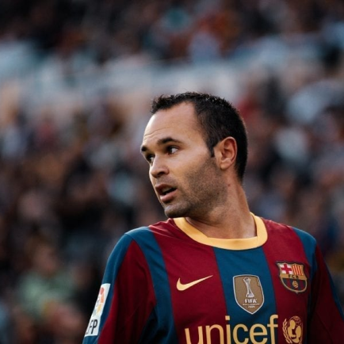
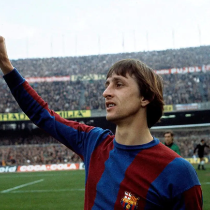

Barcelona
Em 22 de outubro de 1899, um ex-futebolista suíço, Hans Gamper, colocou um anúncio no jornal Los Deportes declarando seu desejo de formar um clube de futebol em Barcelona. Uma resposta positiva resultou em uma reunião no Gimnasio Solé, em 29 de novembro. Onze jogadores participaram: Walter Wild, Lluís d'Osso, Bartomeu Terradas, Otto Kunzle, Otto Maier, Enric Ducal, Pere Cabot, Carles Puyol, Josep Llobet, John Parsons e William Parsons. Como resultado, o Foot-Ball Club Barcelona nasceu de forma cosmopolita, que paradoxalmente lhe caracterizaria juntamente com o espírito catalão, que o clube só exaltaria mais tarde.
Títulos
Champions League: 5
Campeonato Espanhol: 26
Copa do Rei: 31
Mundial: 3

Ídolos
- 
- 
- 
- 
LIONEL MESSI
O melhor jogador da história do futebol? Muitos acreditam que sim e ele é certamente a melhor da era moderna. O argentino é responsável por grande parte do sucesso espetacular do Barcelona nos últimos anos. Ele quebrou quase todos os recordes do clube, enquanto ele é o único jogador a ter vencido cinco Bolas de Ouro. Ele também ganhou quatro Champions League e 26 títulos em geral com o Barça.
XAVI
O melhor jogador espanhol na história. Formado em La Masia, ele representa os valores do clube como ninguém. Um grande orquestrador, possui o mapa do campo dentro de sua cabeça, com uma visão excelente e capacidade de passe para os companheiros nas melhores posições.
ANDRES INIESTA
O mago do meio-campo. Junto com Xavi e Busquets, ele formou o melhor meio-campo da história do futebol. O toque requintado, o talento e a visão de Iniesta pode abrir espaços onde parecia não haver nenhum. Atualmente é capitão do clube catalão, ainda o craque responsável por muitos dos passes para gols.
JOHAN CRUYFF
Um dos grandes nomes da história do futebol e o melhor em sua época, Cruyff mudou o Barcelona e revolucionou o futebol como jogador e treinador. Ele foi fundamental na primeira La Liga do Barcelona e também ganhou três Bolas de Ouro (1971, 1973, 1974). Seu gol contra o Atlético de Madrid continua a ser uma das imagens mais icônicas do futebol espanhol.
Camp Nou
Inaugurado em 24 de Setembro de 1957, quando o Fútbol Club Barcelona abandonou seu antigo Estádio de Les Corts por este ser muito pequeno, a primeira partida no novo estádio foi um amistoso entre o clube e uma seleção de Varsóvia, com vitória catalã por 4 a 2. No primeiro jogo oficial, válido pela segunda rodada do Campeonato Espanhol de Futebol da temporada 1957-1958, entre Fútbol Club Barcelona e Real Jaén, com uma vitória de 6 a 1 para a equipa catalã.